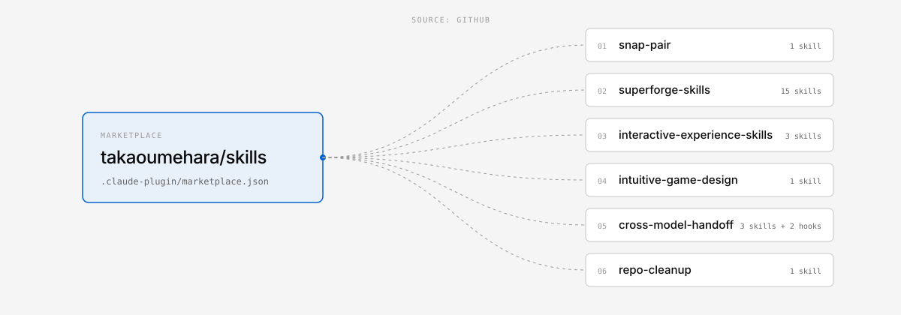

snap-pair
Pairs phones and screens by QR code, PIN, or broadcast, then streams realtime input over Firebase, PartyKit, WebRTC, or BroadcastChannel. Backed by the snap-pair-core npm package.
/plugin install snap-pair@takaoumehara
Six Claude Code plugins. One marketplace line.
A Claude Code plugin marketplace that indexes every public skill by Takao Umehara. It holds only a catalog file. Each plugin is installed straight from its own repository, so nothing is copied here and every plugin stays current.
/plugin marketplace add takaoumehara/skills
/plugin install snap-pair@takaoumehara
01Install
Swap snap-pair for any plugin name below. Run /plugin to browse the whole catalog interactively.
/plugin marketplace add takaoumehara/skills
/plugin install snap-pair@takaoumeharaclaude plugin marketplace add takaoumehara/skills
claude plugin install <name>@takaoumehara/plugin marketplace update takaoumehara02Plugins
Each entry points at the plugin's own GitHub repository. Install any of them with one line.
Pairs phones and screens by QR code, PIN, or broadcast, then streams realtime input over Firebase, PartyKit, WebRTC, or BroadcastChannel. Backed by the snap-pair-core npm package.
A thin router that sends each task to one of 14 product specialists (brain, biz, brand, ui, scroll, dev, test, debug, a11y, secure, roast, verify, ship, handoff), with a verification gate before release.
For work built on human movement, cameras, and sensors. A director first decides whether you are making an experience or a training tool, then hands off to the installation specialist or the movement-learning specialist.
Designs and builds games a first-time player understands without a manual: intuition design and diagnosis, one-tap game feel, Web Audio, camera and body input, calm puzzles, and multiplayer sync.
Run /handoff before /clear or a tool switch to save one note under a passphrase. Resume it by name in Claude Code, Codex, Gemini CLI, Antigravity, Cursor, or any tool that reads AGENTS.md.
Brings a messy git working tree back to clean: untracks build output, completes .gitignore, and sorts changes into commit, stash, or discard. It never leaks a secret or drops uncommitted work.
The skill counts are what claude plugin details <name> reported after a clean install from this marketplace on Claude Code 2.1.283 (2026-10-05).
03Which one
They are designed to work together. For example, a multiplayer party game can use snap-pair for pairing and transport and intuitive-game-design for the rules and feel.
| If the work is about… | Use |
|---|---|
| Phones as controllers, a shared big screen, rooms joined by QR or PIN | snap-pair |
| A game a stranger should understand in seconds (rules, feel, sound) | intuitive-game-design |
| Bodies, cameras, or sensors in an installation or a coaching/training product | interactive-experience-skills |
| Taking any product from idea through build, verification, and release | superforge-skills |
04Also available
| Skill | Why it is not in the marketplace yet |
|---|---|
| failforward-skill | The skill calls a local failforward CLI that its install.sh puts on your PATH. A plugin install would bring the skill but not the CLI, so install it with the repo's script for now. |
05FAQ
.claude-plugin/marketplace.json. Each entry points at the plugin's own GitHub repository, so every plugin is installed straight from its source and stays current.ssh: … Could not read from remote repositoryCLAUDE_CODE_PLUGIN_PREFER_HTTPS=1 to make it use HTTPS instead. All of these repos are public, so no credentials are needed./plugin marketplace add takaoumehara/superforge-skill
/plugin install superforge-skills@superforge/plugin marketplace update takaoumehara, then try again.